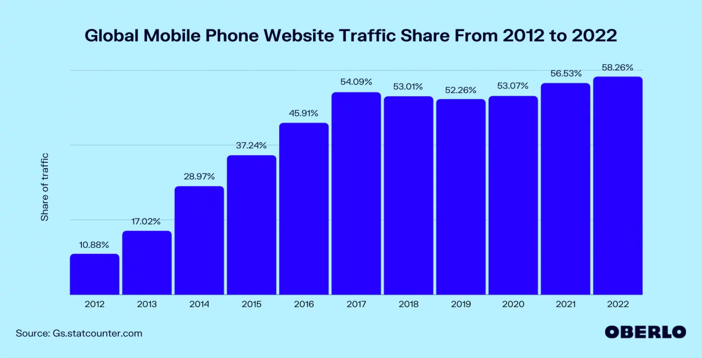

How Mobile-First Design Strategy Came to Be:
Historically, websites were developed with the assumption that desktop access was the primary mode of use. As mobile devices became more prevalent, developers faced challenges adapting these desktop-centric sites for smaller screens—a process known as Graceful Degradation or the Desktop-First approach. This method often resulted in a degraded user experience on mobile devices due to poor adaptation of web elements.
To address these issues, the Mobile-First Design strategy emerged. This approach encourages designers to start with the smallest screens and gradually enhance the design for larger devices, ensuring that the core functionality and user experience are optimized for mobile users.

Why Mobile-First Design is Critical:
Mobile devices now account for a significant portion of web traffic. According to Statcounter GlobalStats, mobile users surpass desktop users, with mobile leading at 60.43% market share. This trend underscores the importance of prioritizing mobile-first design to accommodate the growing mobile audience.
What is Mobile-First Development?
Mobile-first development is a web design strategy that starts with designing and developing the mobile version of a website or application before adapting it for larger screens like tablets and desktops. This approach ensures a seamless and efficient user experience on mobile devices, which is crucial given their increasing dominance.
Significance of Mobile-First Development:
1. Rising Mobile Usage:
Mobile internet usage has surpassed desktop usage in many regions. Designing for mobile first ensures that websites are optimized for the most commonly used platform.
2. Performance Optimization:
Mobile-first design focuses on performance for devices with less processing power and slower connections, leading to faster load times and improved user experience across all devices.
3. Improved User Experience:
Designing for mobile first encourages simpler, more intuitive interfaces that enhance usability on smaller screens, which often translates to a better experience on larger screens as well.
4. Responsive Design Integration:
Mobile-first development aligns with responsive design principles, ensuring that websites adapt seamlessly to various screen sizes from smartphones to desktops.
5. Better SEO:
Search engines like Google prioritize mobile-friendly websites. A mobile-first approach improves search engine optimization (SEO) by ensuring that sites perform well on mobile devices.
6. Focus on Core Content:
Mobile-first design forces prioritization of essential content and functionalities, leading to a more streamlined and effective presentation of information.
7. Cost Efficiency:
Addressing mobile design constraints early reduces the need for significant adjustments later, potentially saving on development and maintenance costs.
8. Future-Proofing:
Starting with a mobile-first approach ensures that websites remain relevant and functional as mobile technology and usage continue to evolve.
Best Practices for Mobile-First Development:
1. Design for Touch: Ensure interactive elements are easy to tap and navigate with a touch interface. Consider touch targets and gesture-based navigation.
2. Prioritize Speed: Optimize images, minify code, and use caching to enhance load times. Mobile users often face slower connections, so performance is critical.
3. Simplify Navigation: Use clear, simple navigation menus. Consider space-saving patterns like hamburger menus to help users easily find what they’re looking for.
4. Optimize Forms: Design forms with mobile users in mind, using input types that match the data being collected and minimizing typing requirements.
5. Test Extensively: Test designs on various mobile devices and screen sizes to ensure consistency and usability. Emulate different devices and test real-world scenarios to identify potential issues.
Conclusion
Mobile-first development is crucial in modern web design, reflecting the shift towards mobile usage and the need for optimized, user-friendly experiences across all devices. By prioritizing mobile design, developers and designers can create efficient, accessible, and engaging websites and applications that meet the demands of today's digital landscape.